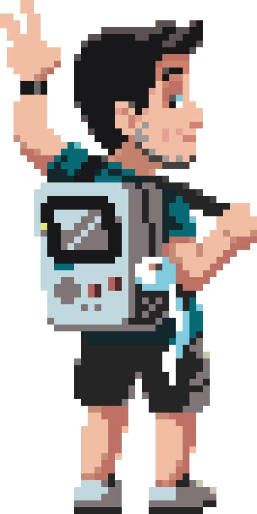

Quem Sou
Olá! Sou Guilherme Magalhães, natural de Niterói (RJ) e vim a São Paulo a trabalho no ano de 2019, onde estou desde então.
Atuo na área de TI, com foco em meios de pagamento e adquirência.
Também me envolvo em iniciativas culturais relacionadas ao maracatu de baque virado, manifestação originária de Recife (PE).

Formação e Experiências
Sou graduado em Sistemas de Informação pela Universidade Federal Fluminense (UFF).
Durante a graduação, participei de projetos de iniciação científica com autômatos celulares aplicados à modelagem de tráfego viário, despertando meu interesse pelo Conway Game of Life - tema deste site. Essas experiências renderam publicações e prêmios.
Publicações:
-
"A new stochastic cellular automata model for traffic flow simulation with drivers behavior
prediction"
Journal of Computational Science · Jul 1, 2015 -
"Traffic Flow Simulation Under the Influence of Different Acceleration Policies"
ISBN: 1-60132-452-9, CSREA Press © · Aug 1, 2017 -
"Drivers' Behavior Effects in the Occurrence of Dangerous Situations Which May Lead to
Accidents"
ACRI 2018 - ISBN 978-3-319-99813-8 - Springer, Cham · Aug 26, 2018
Realizei intercâmbio pelo programa extinto Ciência sem Fronteiras (CSF) na Universidade de Goldsmiths, em Londres, onde cursei disciplinas do mestrado em Computational Arts.
Profissionalmente: passagens por British American Tobacco (Souza Cruz), IBM, Stone e atualmente Worldpay/GlobalPayments, atuando em meios de pagamento.
Como hobbies: desenvolvo projetos maker (impressão 3D, microcontroladores) e participo de iniciativas culturais.
Interesses e Expectativas
Tenho interesse em software livre, projetos maker e cultura popular, especialmente maracatu de baque virado.
Escolhi o curso de Design Educacional para ampliar possibilidades no ambiente corporativo (treinamentos internos) e projetos culturais/pessoais.
Espero aprender metodologias para tornar iniciativas mais impactantes e inovadoras.
Reflexão
Conhecer e me encantar com o Conway Game of Life (Jogo da Vida), tema do site, facilitou meu envolvimento e aprendizado sobre autômatos celulares, o que impulsionou minha pesquisa nessa área e facilitou minha graduação.
Vejo como a tecnologia, aplicada de forma criativa, pode impulsionar o aprendizado.
O DE pode também ser a ponte entre tecnologia, educação e cultura para potencializar minhas ações.
Game of Life
O que é o Jogo da Vida?
Regras
- Qualquer célula viva com menos de dois vizinhos vivos morre de solidão.
- Qualquer célula viva com mais de três vizinhos vivos morre de superpopulação.
- Qualquer célula morta com exatamente três vizinhos vivos se torna uma célula viva.
- Qualquer célula viva com dois ou três vizinhos vivos continua no mesmo estado para a próxima geração.
Clique em "Ocultar Conteúdo" no menu superior e explore a interação com o Jogo da Vida usando o menu inferior esquerdo.